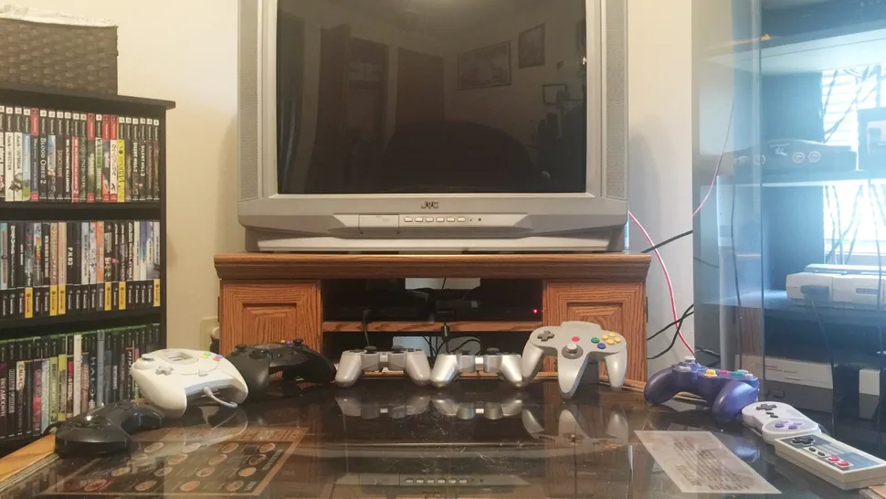

The Ultimate All-in-One Entertainment System
Solving the clutter of multi-platform gaming by building a single, seamless, gamepad-driven system for retro classics, modern titles, and media streaming.
The Problem: A Clunky Console Experience
I wanted to bring back the feeling of playing games on the couch with friends and family, but my game collection spanned multiple platforms. This meant either a costly, cable-filled nightmare of different consoles hooked up at once or the constant hassle of connecting and disconnecting them. Neither option was appealing.
I'd dabbled in PC emulation before, but it never captured the seamless console experience I was after. Every session required a mouse and keyboard to launch games, configure controllers, or tweak settings. This setup process often cut into our gaming time, and sometimes, the hassle of troubleshooting was enough to kill the desire to play. A keyboard and mouse in the living room simply wasn't the clean, simple setup I envisioned.
The Discovery: A Console-First OS
Determined to find a better way, I started experimenting with Linux to build my own solution. That's when I stumbled upon an open-source project called Batocera Linux. It's an operating system built specifically for emulation, and it was exactly what I had been trying to create. Best of all, it featured beautiful, console-style themes that were fully navigable with a gamepad—no mouse or keyboard required!

I installed it on my secondary computer, and just like that, retro emulation was working perfectly right out of the box. While it handled retro games beautifully, I knew its potential was greater. If it was built on Linux, I should be able to install other Linux programs on it.
The Breakthrough: Unlocking Full Potential
After digging a little deeper, I found a community project called Batocera Unofficial Addons. From that point on, everything clicked into place. This discovery was the key that allowed me to expand the system's capabilities far beyond its original design, enabling me to integrate modern games and applications seamlessly into the console-like interface.
The Final Product: A Unified Entertainment Hub
The result is my ultimate all-in-one Media and Entertainment System. It can stream movies and TV shows, and it's ready to play everything from retro classics to modern titles, including Windows games. The best part is that it all runs through a clean, console-like interface that I can control with any gamepad I own—even my old Guitar Hero and Rock Band instruments—no mouse or keyboard in sight.
Skills Demonstrated
- System Integration: Combining Batocera with community addons to create a unified system.
- Linux OS Configuration: Installing, customizing, and expanding a specialized Linux distribution.
- User Experience (UX) Focus: Prioritizing a seamless, frustration-free, gamepad-driven interface over a traditional PC setup.
- Hardware Management: Consolidating multiple consoles and PCs into a single, clean device.
- Problem Solving & Research: Identifying the shortcomings of standard emulation and researching to find a superior, integrated solution.
Conclusion
This project successfully addressed a personal frustration by creating a powerful and user-friendly solution. It transformed a clunky, multi-device setup into a streamlined entertainment hub that finally brought back the simple joy of couch gaming for friends and family.